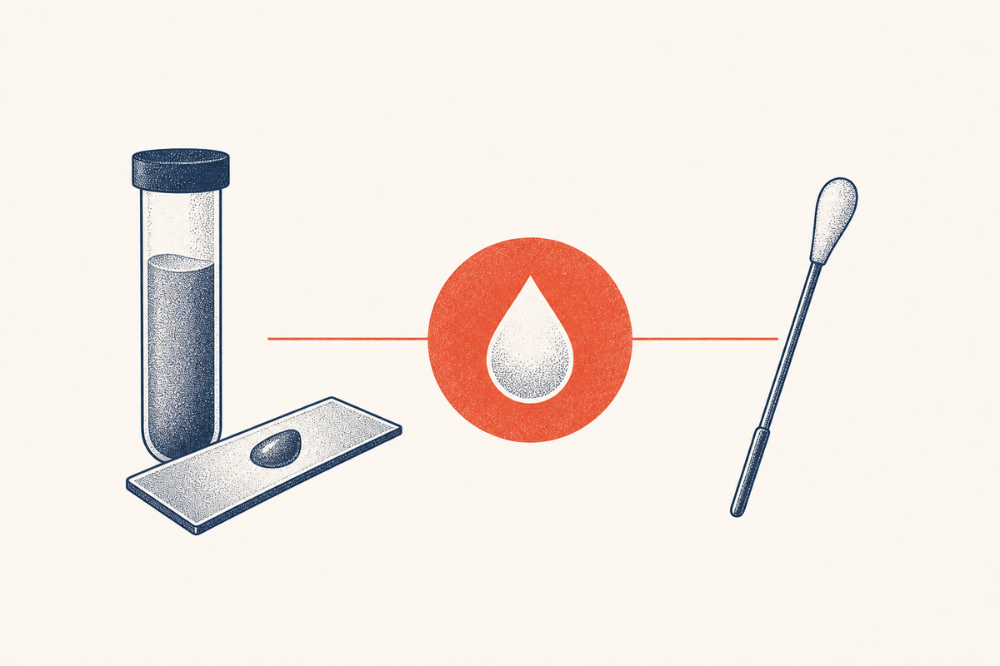

Key Takeaways
- BV discharge is classically thin, homogeneous, and gray or off-white, and it coats the vaginal walls, in contrast to the thick, clumpy discharge of yeast.[3]
- A fishy odor that appears or strengthens after sex or during menses is characteristic of BV and is one of the four Amsel diagnostic criteria.[3]
- Most BV produces no symptoms at all: about 84 percent of women with confirmed BV report no discharge or other symptoms, so the absence of discharge does not rule BV out.[5]
- Several conditions produce abnormal discharge, including BV, yeast, trichomoniasis, and cervicitis, and their appearances overlap enough that a swab is more reliable than a visual guess.[1]
- Diagnosis rests on the Amsel criteria (at least 3 of 4 findings) or a Nugent Gram stain score of 7 to 10, not on the appearance of discharge alone.[3][4]
- Douching to manage discharge backfires: it strips protective lactobacilli and raises the risk of the very bacterial overgrowth causing BV.[5]
- BV discharge resolves with prescription antibiotics (metronidazole, clindamycin, or secnidazole), not with over-the-counter yeast treatments.[1]

Discharge is the symptom people associate most with bacterial vaginosis, and it is also the most misunderstood. This guide explains exactly what BV discharge looks like, how it differs from the other causes of abnormal discharge, why so many women with BV have no discharge at all, and how clinicians actually use discharge, along with three other findings, to make the diagnosis.
What BV Discharge Actually Looks Like
The classic BV discharge has a specific, recognizable profile. It is thin and watery rather than thick, homogeneous meaning it looks the same throughout rather than lumpy, and gray or off-white in color, and it tends to coat the vaginal walls evenly rather than collecting in one spot.[3] The discharge is a symptom of the underlying shift: the normal Lactobacillus dominant flora is displaced by Gardnerella and other anaerobes, which is what produces the characteristic fluid and odor.[2] Alongside that discharge, a fishy odor is common, usually faint at baseline and stronger after intercourse or during menstruation.[3]
It is worth naming what it is not. BV discharge is not thick, not yellow-green, and not frothy, and it does not smell foul or rotten; foul-smelling purulent discharge should raise suspicion for something else. But these descriptions only get you so far, because the appearance of discharge overlaps heavily between conditions, and the human eye is not a reliable diagnostic instrument here.[1]
| Feature | Bacterial vaginosis | Yeast | Trichomoniasis |
|---|---|---|---|
| Consistency | Thin, homogeneous | Thick, clumpy | Frothy, bubbly |
| Color | Gray or off-white | White | Yellow-green |
| Odor | Fishy | Little or none | Foul or fishy |
| pH | Above 4.5 | 4.5 or below | Above 4.5 |
| Accompanying | Mild itch, no pain | Intense itch | Irritation, sometimes spotting |
Trichomoniasis is the important third cause in this table. It is a sexually transmitted infection by the parasite Trichomonas vaginalis, and its discharge is typically frothy and yellow-green with a strong odor and sometimes vaginal soreness, findings that push the differential well beyond the BV versus yeast question.[1]
Discharge by Cause: Reading the Differences
Because the table above shows real overlap, a better way to think about abnormal discharge is by what drives each one. BV discharge reflects a shift in the vaginal microbiome, with Lactobacillus species displaced by Gardnerella and related anaerobes.[6][7] Yeast discharge reflects fungal overgrowth, most often Candida albicans, and is driven by the inflammatory response that produces itch and thick debris.[10] Trichomoniasis discharge reflects a true infection, and it frequently accompanies inflammation of the cervix as well.[1]
The practical consequence is that treatment is entirely different for each. An antibiotic clears BV, an antifungal clears yeast, and a specific antiprotozoal such as metronidazole or tinidazole clears trichomoniasis, which is why identifying the cause before treating is the whole game.[1] It is also a genuinely common problem: in a large clinic population, BV and yeast were each found in roughly 3 in 10 women, so this differential is everyday medicine rather than an edge case.[8] For the full BV versus yeast comparison, see our BV vs yeast guide.
When There Is No Discharge At All
Here is the single most counterintuitive fact about BV: most people who have it do not have discharge. In the National Health and Nutrition Examination Survey, only about 15.7 percent of women with laboratory confirmed BV reported vaginal symptoms at all, which means roughly 84 percent were completely asymptomatic.[5]
This cuts in both directions. If you do not have discharge, you can still have BV, and if a screening swab finds BV incidentally, it may still matter because untreated BV is linked to higher STI and preterm birth risk, a decision your clinician can help weigh.[1][5] It also means that the old habit of treating only when discharge is present misses most of the condition.
Beyond BV, Yeast, and Trichomoniasis
The big three, BV, yeast, and trichomoniasis, account for most abnormal discharge, but not all of it, and two other causes are common enough to matter. One is cervicitis, inflammation of the cervix from chlamydia or gonorrhea, which produces a mucopurulent discharge, sometimes with bleeding after intercourse, and requires its own testing and treatment rather than a vaginitis medicine.[1] The other is atrophic vaginitis, now framed as genitourinary syndrome of menopause, in which the thinning of estrogen-depleted tissues produces a thin, watery, sometimes blood-tinged discharge with dryness and burning, most common around and after menopause.[11]
There are rarer inflammatory causes as well, such as desquamative inflammatory vaginitis, which produces a persistent, sometimes yellow discharge that does not fit the big three. The point of naming them is not to alarm but to be honest about the limits of visual matching: abnormal discharge spans a real differential, and the same swab panel that tests for BV, yeast, and trichomoniasis can also test for chlamydia and gonorrhea, so a single evaluation resolves most of it.[1][11]
How Discharge Fits Into Diagnosis
Discharge is one part of the diagnosis, not the whole thing. The Amsel criteria require at least three of four findings: a thin, homogeneous discharge; a vaginal pH above 4.5; clue cells on saline microscopy, which are vaginal cells coated in adherent bacteria; and a positive whiff test, a fishy odor released when potassium hydroxide is added to a sample.[3] Three of the four are objective (pH, clue cells, whiff test), which is why the appearance of discharge alone never confirms the diagnosis.
| Amsel criterion | What it requires |
|---|---|
| Thin, homogeneous discharge | Coats the vaginal walls |
| Vaginal pH | Above 4.5 |
| Clue cells | Seen on saline microscopy |
| Whiff test | Fishy odor after adding potassium hydroxide |
The laboratory alternative is the Nugent score, in which a Gram stain is scored from 0 to 10 by the relative numbers of Lactobacillus morphotypes versus Gardnerella and Bacteroides morphotypes and curved rods, with 7 to 10 indicating BV.[4] Both approaches beat examining discharge by eye, and molecular panels add yet another option that tests directly for the DNA of the involved organisms.[1]
How Discharge Is Actually Tested
Knowing what happens at the test takes some of the mystery out of it. A sample is taken with a swab from the vaginal walls, and several things are done with it. The pH of the discharge or the vaginal wall is measured, a saline wet mount is examined under a microscope for clue cells and mobile trichomonads, and a potassium hydroxide preparation is used both for the whiff test and to look for yeast hyphae.[3] In the laboratory, a Nugent Gram stain grades the bacterial morphotypes, and molecular panels can identify the specific organisms, Gardnerella, Atopobium, Candida species, and Trichomonas, and can cover chlamydia and gonorrhea from the same specimen.[1][4]
Two practical notes. Self-collected vaginal swabs are an accurate alternative to a clinician-collected swab and are what make telehealth evaluation of discharge practical.[1] And the sample should ideally be collected before any treatment, and ideally not right after douching or inserting vaginal products, so that the result reflects the actual state of the microbiome.[1] None of this hurts, and it is the step that turns a description of discharge into a diagnosis.
Abnormal Discharge vs Normal Discharge
A meaningful share of what brings people in for "abnormal discharge" is actually normal. The vagina produces a physiologic discharge, clear or milky, that varies across the menstrual cycle, increasing and becoming more slippery around ovulation and thinning or thickening at other points. Normal discharge has no foul odor, does not itch, and does not burn.[7]
The line to watch is change. A discharge that has been your normal for years and is not accompanied by odor, itch, or irritation is very likely fine. A new discharge, a change in color or texture, an itch, a burn, or a new odor is the signal to evaluate rather than explain away. Crucially, douching to manage either normal or abnormal discharge is counterproductive, because it removes the protective lactobacilli and raises the risk of the very overgrowth that causes BV.[5]
Pregnancy changes the baseline too. Increased physiologic discharge, thin, milky, and mild-smelling, is common during pregnancy because of hormonal changes, and it is easy to mistake for a problem. The same rule applies: a change, an itch, a new odor, or any bleeding during pregnancy warrants a call to the clinician rather than an assumption that it is normal.[1]
Discharge Red Flags: When to Be Seen Promptly
Certain features should never be waited out. Seek prompt evaluation for discharge that is greenish or gray with a foul odor, discharge with fever or pelvic or lower abdominal pain, pain during sex, bleeding between periods, or any discharge during pregnancy.[1] These can signal pelvic inflammatory disease or other infections that need treatment without delay. Likewise, if a completed course of treatment did not resolve the discharge, the diagnosis may have been wrong, and a repeat evaluation is in order rather than another round of the same medicine.[1]
Preventing Discharge From Returning
Because the discharge follows the infection, the same rules that lower recurrence lower the chance the discharge comes back. Finish the full antibiotic course rather than stopping when the discharge clears, avoid douching, which strips the protective lactobacilli, and consider condoms, which buffer the alkaline effect of semen that otherwise sets up the next overgrowth.[1][5] None of these are a guarantee, but together they remove the most common self-inflicted setbacks.
If the discharge returns quickly despite a completed course, that is the recurrent BV pattern rather than a one-off, and the answer is a suppression plan, not an endless run of the same short course. How to get rid of BV lays out the suppression, partner, and boric acid options in full.
Treatment for BV Discharge
Once confirmed, BV discharge clears with the standard prescription regimens: metronidazole 500 mg by mouth twice daily for 7 days, metronidazole 0.75% gel once daily for 5 days, clindamycin 2% cream at bedtime for 7 days, or the single-dose secnidazole 2 g.[1] The discharge and odor typically improve within the first days, but the full course should be completed even once they resolve, because stopping early leaves a bacterial reservoir that drives recurrence.[9]
| Regimen | Dose and duration |
|---|---|
| Metronidazole (oral) | 500 mg twice daily for 7 days |
| Metronidazole gel 0.75% | One applicator daily for 5 days |
| Clindamycin cream 2% | One applicator at bedtime for 7 days |
| Secnidazole 2 g | Single oral dose |
Recurrence is common, with 58 percent of women experiencing a return of BV within a year, so if discharge returns, the conversation shifts from one more course to a suppression plan.How to get rid of BV covers that in depth.[9]
What to expect while it clears. The discharge and odor typically begin to improve within the first two to three days of an antibiotic, well before the course ends, which is exactly when people are tempted to stop, and the reason to finish the full course instead.[1][9] A small share of women then notice a yeast infection afterward, which is a separate, easily treated consequence of the antibiotic rather than a failure of it, discussed in the BV vs yeast guide.
Frequently Asked Questions
BV discharge is typically gray or off-white, sometimes described as milky. It is not yellow-green, which points more toward trichomoniasis, and it is not the bright white clumps of yeast.{ref(3)}
Yes, classically. BV is associated with a fishy, amine based odor that strengthens after sex or with menses, and the whiff test detects exactly this odor by adding potassium hydroxide to a sample.{ref(3)}
Yes, and usually it does not. About 84 percent of women with confirmed BV report no symptoms, including no discharge, so you can have BV without any noticeable discharge.{ref(5)}
Thin and watery, and it coats the vaginal walls evenly. Thick, clumpy discharge is the yeast pattern, and frothy discharge suggests trichomoniasis.{ref(3)}
Look for change. Discharge that is new, changed in color or texture, itchy, foul-smelling, or accompanied by pain or bleeding is worth evaluating. A long term, stable, odor-free discharge is usually normal.{ref(7)}
No, and it can make things worse. Douching strips the protective lactobacilli and is associated with a higher risk of BV, so it should be avoided for both normal and abnormal discharge.{ref(5)}
Yellow-green, especially frothy and foul-smelling discharge, suggests trichomoniasis, a sexually transmitted infection needing specific treatment, rather than BV or yeast, and it should prompt testing.{ref(1)}
Yes. Metronidazole, clindamycin, or secnidazole clear BV and its discharge in most cases, but finish the full course even after the discharge improves to lower the chance of recurrence.{ref(1)}{ref(9)}
Recurrence is common, affecting 58 percent of women within a year, because antibiotics clear the bacteria but do not always restore the protective flora or remove biofilm, so the anaerobes repopulate.{ref(9)}
A test is more reliable. Discharge appearance overlaps between conditions, so a swab for pH, clue cells, or molecular testing, rather than appearance alone, is what confirms the cause.{ref(3)}{ref(4)}
No. BV discharge is gray or off-white, not bloody. Brown or bloody discharge, especially between periods or after sex, has other causes and should be evaluated.{ref(1)}
A single 2 g dose of secnidazole is the quickest single treatment, resolving BV in one dose, though a full metronidazole or clindamycin course has a higher headline cure rate.{ref(1)}
References
- Workowski KA, Bachmann LH, Chan PA, et al. Sexually Transmitted Infections Treatment Guidelines, 2021. MMWR Recomm Rep. 2021;70(4):1-187. PMID 34292926
- Centers for Disease Control and Prevention. About Bacterial Vaginosis (BV). cdc.gov
- Amsel R, Totten PA, Spiegel CA, Chen KC, Eschenbach D, Holmes KK. Nonspecific vaginitis. Diagnostic criteria and microbial and epidemiologic associations. Am J Med. 1983;74(1):14-22. PMID 6600371
- Nugent RP, Krohn MA, Hillier SL. Reliability of diagnosing bacterial vaginosis is improved by a standardized method of Gram stain interpretation. J Clin Microbiol. 1991;29(2):297-301. PMID 1706728
- Koumans EH, Sternberg M, Bruce C, et al. The prevalence of bacterial vaginosis in the United States, 2001-2004: associations with symptoms, sexual behaviors, and reproductive health. Sex Transm Dis. 2007;34(11):864-869. PMID 17621244
- Fredricks DN, Fiedler TL, Marrazzo JM. Molecular identification of bacteria associated with bacterial vaginosis. N Engl J Med. 2005;353(18):1899-1911. PMID 16267321
- Ravel J, Gajer P, Abdo Z, et al. Vaginal microbiome of reproductive-age women. Proc Natl Acad Sci U S A. 2011;108(Suppl 1):4680-4687. PMID 20534435
- Sutton C, Bradshaw CS, Plummer EL, et al. Bacterial vaginosis and vulvovaginal candidiasis: sexual and contraceptive practices drive positivity and recurrent infections. Sex Transm Infect. 2026. PMID 41708324
- Bradshaw CS, Morton AN, Hocking J, et al. High recurrence rates of bacterial vaginosis over the course of 12 months after oral metronidazole therapy and factors associated with recurrence. J Infect Dis. 2006;193(11):1478-1486. PMID 16652274
- Sobel JD. Vulvovaginal candidosis. Lancet. 2007;369(9577):1961-1971. PMID 17560449
- Sobel JD. Vulvovaginitis. When Candida becomes a problem. Dermatol Clin. 1998;16(4):763-768. PMID 9891677